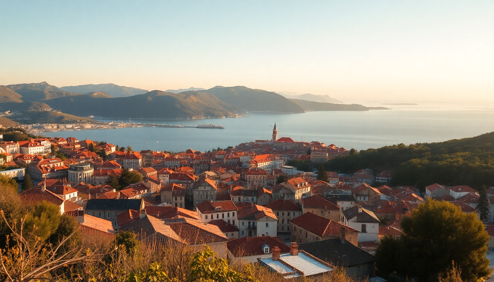

Where to Stay in Split: Best Neighborhoods for Every Budget

I’ve been to Split three times now, and each trip taught me something different about where to lay your head. The first time, I booked a room near the ferry port without thinking—and spent three nights listening to luggage wheels clatter past my window at 5 AM. The second time, I found a quiet apartment in Varoš that changed everything. This guide breaks down Split’s neighborhoods by budget, vibe, and practical reality, so you don’t make the same mistake I did.
What Is the Best Neighborhood for First-Timers?
Stick to the Old Town (Grad) if you want to wake up inside a 1,700-year-old Roman palace. It’s compact, walkable, and every major sight—from the Peristyle to the Cathedral of Saint Domnius—is a five-minute stroll away. But it’s also loud, especially in summer when bar crowds spill onto the marble streets until 2 AM.
- Pros: Unbeatable location, historic atmosphere, easy access to ferry and bus terminals.
- Cons: Can be noisy at night; apartments are often small and dark (stone walls = no windows).
- Budget pick: Hostel Split Backpackers — basic but social, right off the Riva promenade.
- Mid-range: Hotel Vestibul Palace — a converted Roman palace room with exposed stone walls.
- Splurge: Heritage Hotel Antique — eight rooms, rooftop terrace, dead quiet at night.
I stayed at Vestibul Palace once and loved the novelty, but the lack of natural light got old after two days. For a longer trip, I’d pick something in Varoš instead.
Where Should I Stay for Nightlife and Dining Out?
Varoš is the old fisherman’s quarter clinging to the slopes of Marjan Hill. It’s a five-minute walk from the Old Town but feels like a different world—narrow stone lanes, laundry lines, and family-run konobas where the waiter remembers your name by the second night.
- Best for: Couples and solo travelers who want authentic Split energy without the tourist markup.
- My go-to dinner: Konoba Fetivi — cash only, no menu, just grilled fish and vegetables. Arrive before 7 PM or wait an hour.
- Nightlife: Skip the Riva bars (overpriced Aperol spritzes) and head to Bokeria on the edge of Varoš for craft cocktails and a younger crowd.
- Where to stay: Apartment Marjan — two-bedroom with a terrace overlooking the rooftops. I booked it through Booking.com and paid €80 a night in shoulder season.
- Budget option: Rooms Villa Drago — simple but clean, run by a local family.
Varoš gets quiet by midnight, which I prefer. If you want to party until sunrise, stay closer to the waterfront near Matejuška port, where clubs like Central play house music until 4 AM.
What Is the Best Area for Families or Quiet Stays?
Meje is the leafy, upscale neighborhood along the coast west of the Old Town. It’s where Split’s wealthier families live, and it shows—wide sidewalks, pine trees, and a long promenade perfect for stroller walks. The beaches here (Bene, Kašjuni) are pebbly but clean and far less crowded than Bačvice.
- Best for: Families with kids, older travelers, anyone who values sleep over nightlife.
- Where to stay: Hotel Park Split — a 1920s Art Nouveau building with a massive garden and a pool. I didn’t stay here myself (out of my budget), but I walked through the garden and it’s genuinely peaceful.
- Mid-range: Villa M — a small guesthouse with a kitchenette and a shared terrace. Good for self-catering families.
- Beach tip: Kašjuni Beach is a 15-minute walk from Meje. Bring water shoes—the pebbles are sharp.
The trade-off is distance: it’s a 20-minute walk to the Old Town, or a quick Uber for about €5. If you’re fit and don’t mind the stroll, Meje is a solid choice.
Where Should Budget Travelers Look Outside the Center?
Split 3 (officially known as the Brodarica district) is a socialist-era housing estate built in the 1970s. It sounds unglamorous, and it is—but it’s also where you’ll find the cheapest private rooms and apartments within walking distance of the center.
- Pros: 15-minute walk to the Old Town, supermarkets like Tommy and Lidl nearby, very safe.
- Cons: Ugly concrete architecture, no charm, limited dining options.
- Where to stay: Apartment Lana — a one-bedroom with a full kitchen for €45 a night. The host, Lana, left us homemade rakija and a map of local bakeries.
- Eat nearby: Pekara Bobis for burek with cheese (€2.50) or Konoba Korta on the edge of the district for grilled cevapi.
I stayed here during my second trip and saved enough money to take a day trip to Hvar. If you’re okay trading aesthetics for affordability, Split 3 works fine.
Is the Riva Promenade a Good Place to Stay?
The Riva is Split’s waterfront promenade, lined with palm trees, cafés, and cruise-ship passengers. It’s beautiful for a sunset stroll, but as a place to sleep? I’d think twice.
- Noise: Cafés blast music until late; morning deliveries start at 6 AM.
- Crowds: In July and August, you can barely walk without bumping into selfie sticks.
- When it works: If you get a room facing the inland side (toward the palace) with double-glazed windows. Hotel Luxe is one of the few with decent soundproofing.
- Price: Expect to pay a premium for the view. Rooms here cost 30-50% more than equivalent spots in Varoš.
I had a drink at Café Bar Riva one evening and watched a guy Trip over a mooring line. It’s fun for people-watching, but I wouldn’t sleep there.
What About Staying Near the Ferry Port or Bus Station?
The Port Area (around the main ferry terminal and bus station) is convenient for island-hopping but grim otherwise. It’s a transit zone—parking lots, ticket kiosks, and a constant stream of taxis honking.
- Only stay here if: You have an early ferry to Hvar, Brač, or Korčula and don’t want to rush.
- Where to stay: Hotel Marjan — a no-frills business hotel right at the terminal. Clean, decent breakfast, but zero character.
- Avoid: Any apartment listed as “5 minutes from the port” without checking the street. I booked one that overlooked a bus depot.
My advice: take the 10-minute walk from the Old Town to the port when you need it, but sleep elsewhere.
FAQ
What is the best neighborhood in Split for nightlife? Varoš and the area around Matejuška port are where locals go. For clubs, head to Central or O’Hara near the waterfront. Avoid the Riva bars—they’re overpriced and full of tourists.
Is Split safe to walk around at night? Yes. I walked home alone from Varoš to Split 3 at midnight and felt fine. Stick to well-lit main streets, and watch for uneven cobblestones in the Old Town (I twisted my ankle once).
Should I rent a car if I’m staying in Split? No. Parking is a nightmare and expensive (€10-15 per day in garages). Use Ubers or Bolt for trips to Meje or Marjan Hill. If you’re doing day trips, rent a car only for the day and return it in the evening.
Conclusion
- First-timers should stay in the Old Town (Grad) for convenience, but expect noise.
- Nightlife lovers belong in Varoš—authentic, walkable, and close to the best konobas.
- Families should pick Meje for quiet beaches and green space.
- Budget travelers will find value in Split 3, just 15 minutes on foot from the center.
- Skip the Riva and Port Area unless you have a specific reason (early ferry, business trip).